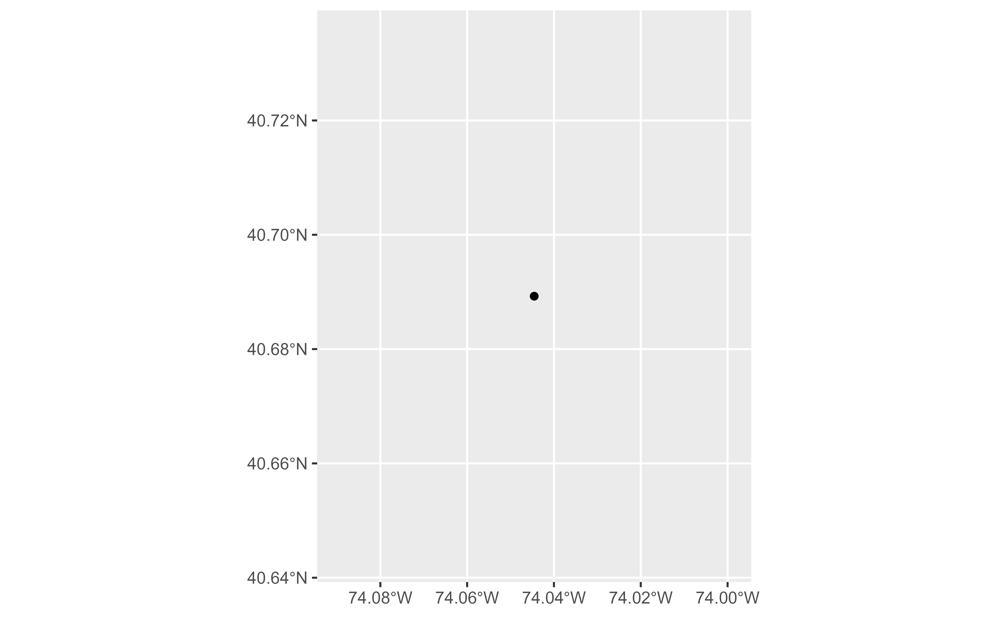
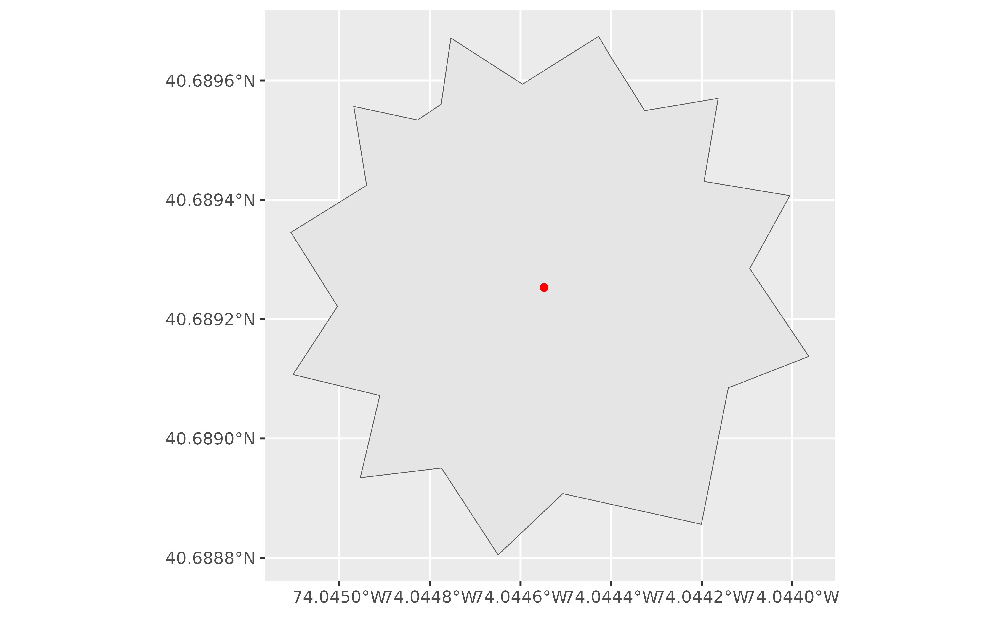
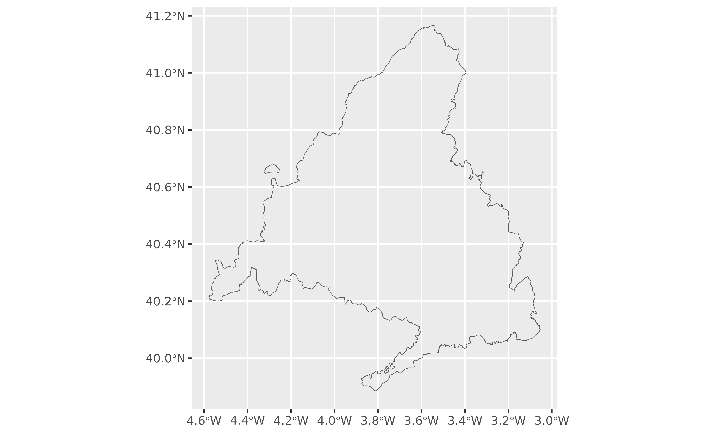
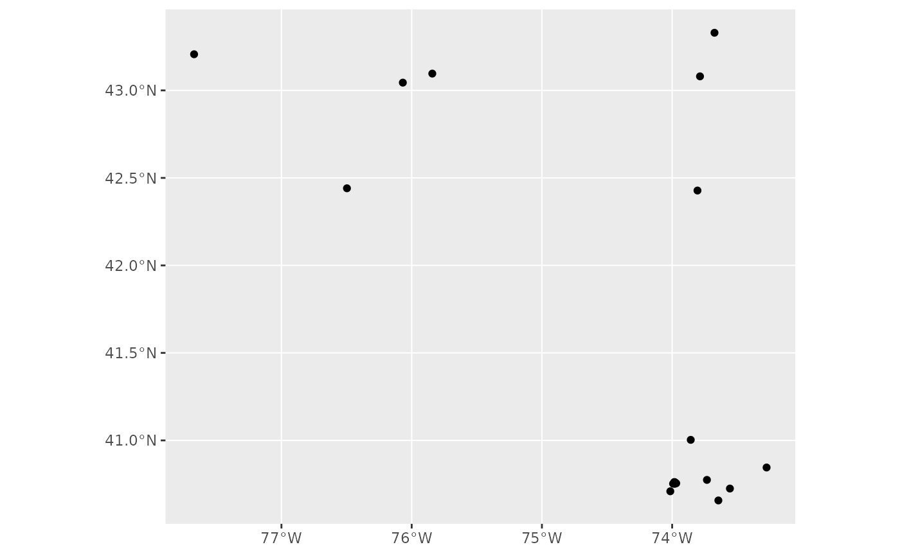

This function allows you to geocode addresses and return the corresponding spatial object.
The parameter points_only specifies whether the function results will be
points (all Nominatim results are guaranteed to have at least point
geometry) or possibly other spatial objects.
Note that the type of geometry returned in case of points_only = FALSE
will depend on the object being geocoded:
administrative areas, major buildings and the like will be returned as polygons
rivers, roads and their like as lines
amenities may be points even in case of a
points_only = FALSEcall
The function is vectorized, allowing for multiple addresses to be geocoded;
in case of points_only = FALSE multiple geometry types may be returned.
Usage
geo_lite_sf(
address,
limit = 1,
return_addresses = TRUE,
full_results = FALSE,
verbose = FALSE,
custom_query = list(),
points_only = TRUE
)Arguments
- address
single line address (i.e.
"1600 Pennsylvania Ave NW, Washington") or a vector of addresses (c("Madrid", "Barcelona")).- limit
maximum number of results to return per input address. Note that each query returns a maximum of 50 results.
- return_addresses
return input addresses with results if TRUE. Note that most services return the input addresses with
full_results = TRUEand setting return_addresses to FALSE does not prevent this.- full_results
returns all available data from the geocoding service if TRUE. If FALSE (default) then only latitude and longitude columns are returned from the geocoding service.
- verbose
if TRUE then detailed logs are output to the console. FALSE is default. Can be set permanently with
options(tidygeocoder.verbose = TRUE)- custom_query
API-specific parameters to be used, passed as a named list (i.e.
list(countrycodes = "US")). See Details.- points_only
Logical
TRUE/FALSE. Whether to return only spatial points (TRUE, which is the default) or potentially other shapes as provided by the Nominatim API (FALSE).
Details
See https://nominatim.org/release-docs/latest/api/Search/ for additional
parameters to be passed to custom_query.
See also
Other spatial:
bbox_to_poly(),
geo_address_lookup_sf(),
geo_amenity_sf(),
reverse_geo_lite_sf()
Examples
# \donttest{
# Map - Points
library(ggplot2)
pentagon <- geo_lite_sf("Pentagon")
ggplot(pentagon) +
geom_sf()

pentagon_poly <- geo_lite_sf("Pentagon", points_only = FALSE)
ggplot(pentagon_poly) +
geom_sf()

# Several results
Madrid <- geo_lite_sf("Madrid",
limit = 2,
points_only = FALSE, full_results = TRUE
)
ggplot(Madrid) +
geom_sf(fill = NA)

Starbucks <- geo_lite_sf("Starbucks, New York",
limit = 20, full_results = TRUE
)
ggplot(Starbucks) +
geom_sf()

# }